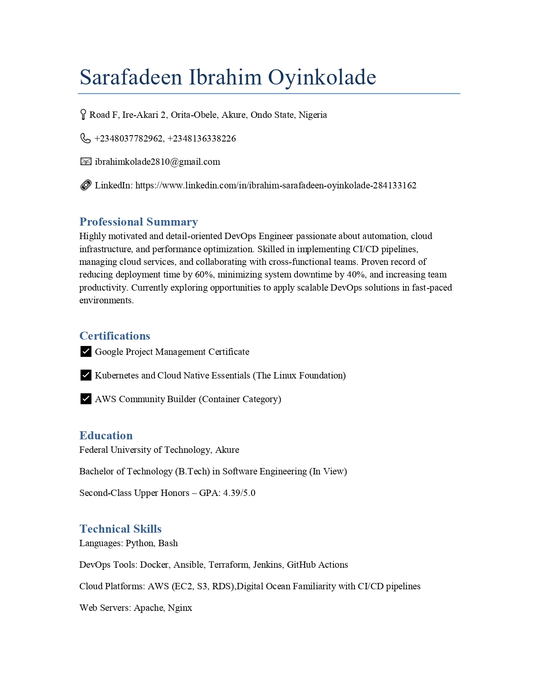
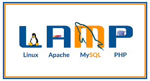
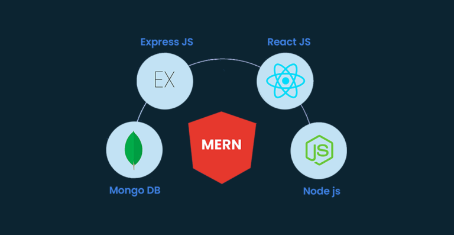

About Me
A Passionate Final-Year Software Engineering student and DevOps Engineer at Salesplat Technologies. I specialize in bridging development and operations through innovative cloud solutions and automation. Experienced in implementing CI/CD pipelines, containerization, and infrastructure as code. Committed to continuous learning and driving technological efficiency, I'm passionate about creating scalable and robust software solutions that transform how businesses operate. Key skills include cloud computing, Docker, Kubernetes, Terraform, and continuous integration technologies. Eager to leverage my academic knowledge and practical internship experience to solve complex technical challenges and contribute to cutting-edge technological innovations.
Technical Skills
Cloud Platforms
- AWS
- Azure
- Digital Ocean
- Google Cloud
DevOps Tools
- Bash Scripting
- Docker
- Kubernetes
- Terraform
- Jenkins
- GitHub Actions
Monitoring & Logging
- Prometheus
- Grafana
- ELK Stack
Professional Resume

Download or View My Full Resume
Detailed overview of my professional experience, skills, and educational background.
Quick Highlights
- Final Year Software Engineering Student
- DevOps Engineer at Salesplat Technologies
- DevOps Engineer at X3Lab
- Expertise in Cloud Computing and CI/CD
DevOps & Software Projects

Advanced CI/CD Pipeline
Implemented a comprehensive continuous integration and deployment pipeline using GitHub Actions, Docker, and Kubernetes.

Scalable Cloud Infrastructure
Designed and deployed a scalable cloud infrastructure using Terraform, focusing on high availability and cost optimization.

LAMP Stack
Implemented LAMP (Linux, Apache, MySQL, PHP) stack on an Amazon EC2 instance.

MERN Stack
Implemented a MERN (MongoDb,ExpressJs,ReactJs,NodeJs) stack on an Amazon EC2 instance
Technical Blog
Exploring the world of technology through writing and sharing knowledge
View Full Blog on Dev.toCertifications

AWS Certified DevOps Engineer
Kubernetes Essential and cloud native Essentials
Google Certified Project manager

Certified Kubernetes Administrator
Contact Me
Email: ibrahimkolade2810@gmail.com